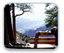

Welcome To HikeTheCanyon.org
This site is dedicated to my dad, Wayne Shuck, with whom I shared one of the greatest adventures of my life. In November 2005,
We completed a rim to rim hike of the Grand Canyon from the North Rim down the North Kaibab Trail, across the Colorado River and up Bright Angel Trail
to the top of the South Rim. I had such high expecations for the trip, but they were all trivialized by how great it truly was when it finally arrived.
Not only do I want to share my experience in the canyon, but I would like to encourage everyone thinking about the hike to do it! But, don't take it lightly.
Prepare for it diligently and make the experience all it can be.
 Read More Here Read More Here
|
Our Hike
We broke our hike up into 4 days, preceded by a night camping in the North Rim Campground the night before our first day. Marathon hikers would scoff
at our schedule, but we wanted to give ourselves plenty of time to see all the side trails and enjoy a more leisurely approach.
To follow along our hike, choose from the sections below.

|  |
Pre-hike at the Canyon
Exploring of the canyon rims pre-hike |
|
Day 1
Down the North Kaibab through Roaring Springs Canyon towards Cottonwood Campground. |
|
Day 2
Continuing on the North Kaibab to Phantom Ranch and Bright Angel Campground |
|
Day 3
The beginning of the end... our journey up Bright Angel Trail toward Indian Garden. |
|
Day 4
Our last day on Bright Angel Trail and our exit at the South Rim. |
|